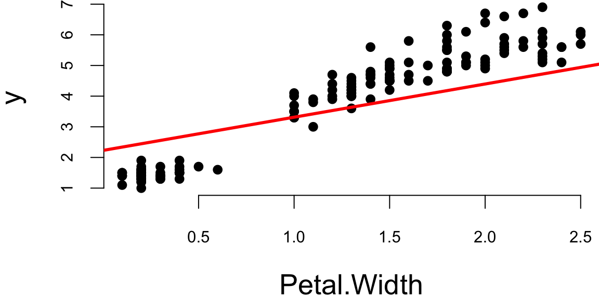
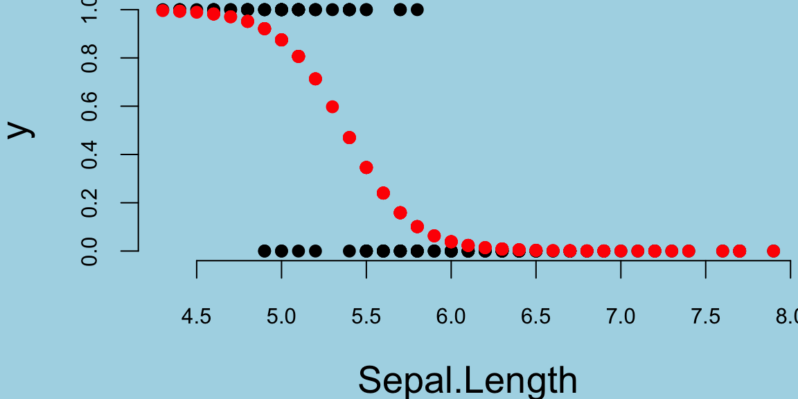
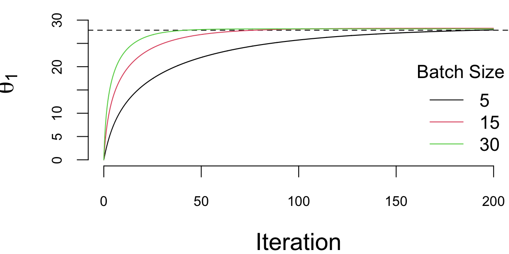
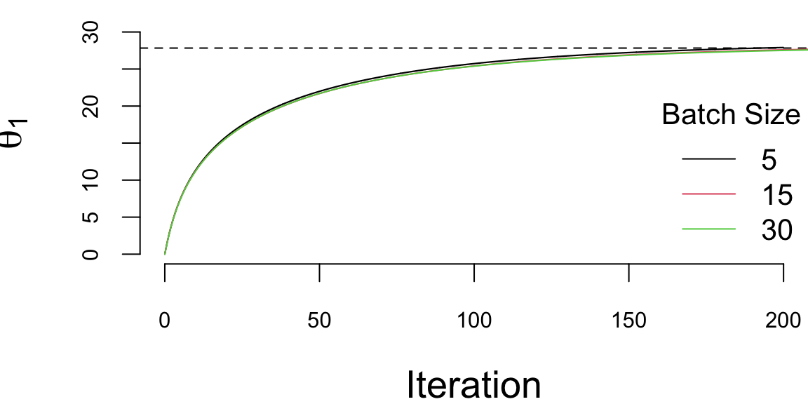
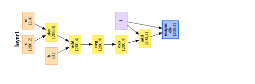

data(iris)
y = iris$Petal.Length
# initialize theta
theta <- matrix(c(0, 0), nrow = 2, ncol = 1)
# learning rate
alpha <- 0.0001
# number of iterations
n_iter <- 1000
# gradient descent
for (i in 1:n_iter) {
# compute gradient
grad <- -2 * t(x) %*% (y - x %*% theta)
# update theta
theta <- theta - alpha * grad
}22 Gradient Descent
Traditional statistical models are estimated by maximizing likelihood and using the least squares algorithm for linear regression and weighted least squares or Broyden-Fletcher-Goldfarb-Shanno (BFGS) algorithm for generalized linear models.
22.1 Deep Learning and Least Squares
The deep learning model approximates the relation between inputs \(x\) and outputs \(y\) using a non-linear function \(f(x,\theta)\), where \(\theta\) is a vector of parameters. The goal is to find the optimal value of \(\theta\) that minimizes the expected loss function, given a training data set \(D = \{x_i,y_i\}_{i=1}^n\). The loss function is a measure of discrepancy between the true value of \(y\) and the predicted value \(f(x,\theta)\). The loss function is usually defined as the negative log-likelihood function of the model. \[ l(\theta) = - \sum_{i=1}^n \log p(y_i | x_i, \theta), \] where \(p(y_i | x_i, \theta)\) is the conditional distribution of \(y_i\) given \(x_i\) and \(\theta\). Thus, in the case of regression, we have \[ y_i = f(x_i,\theta) + \epsilon, ~ \epsilon \sim N(0,\sigma^2), \] Thus, the loss function is \[ l(\theta) = - \sum_{i=1}^n \log p(y_i | x_i, \theta) = \sum_{i=1}^n (y_i - f(x_i, \theta))^2, \]
22.2 Regression
Regression is simply a neural network which is wide and shallow. The insight of DL is that you use a deep and shallow neural network. Let’s look at a simple example and fit a linear regression model to iris dataset.
data(iris)
y = iris$Petal.Length
loss = function(theta) sum((y - x %*% theta)^2)
grad = function(theta) -2 * t(x) %*% (y - x %*% theta)
res = optim(c(0,0), loss, grad, method="BFGS")
theta = res$parOur loss minimization algorithm finds the following coefficients
| Intercept (\(\theta_1\)) | Petal.Width (\(\theta_2\)) |
|---|---|
| 1.083558 | 2.22994 |
Let’s plot the data and model estimated using gradient descent
plot(x[,2],y,pch=16, xlab="Petal.Width")
abline(theta[2],theta[1], lwd=3,col="red")
Let’s compare it to the standard estimation algorithm
m = lm(Petal.Length~Petal.Width, data=iris)| (Intercept) | Petal.Width |
|---|---|
| 1.083558 | 2.22994 |
The values found by gradient descent are very close to the ones found by the standard OLS algorithm.
22.3 Logistic Regression
Logistic regression is a generalized linear model (GLM) with a logit link function, defined as: \[ \log \left(\frac{p}{1-p}\right) = \theta_0 + \theta_1 x_1 + \ldots + \theta_p x_p, \] where \(p\) is the probability of the positive class. The negative log-likelihood function for logistic regression is a cross-entropy loss \[ l(\theta) = - \sum_{i=1}^n \left[ y_i \log p_i + (1-y_i) \log (1-p_i) \right], \] where \(p_i = 1/\left(1 + \exp(-\theta_0 - \theta_1 x_{i1} - \ldots - \theta_p x_{ip})\right)\). The derivative of the negative log-likelihood function is \[ \nabla l(\theta) = - \sum_{i=1}^n \left[ y_i - p_i \right] \begin{pmatrix} 1 \\ x_{i1} \\ \vdots \\ x_{ip} \end{pmatrix}. \] In matrix notations, we have \[ \nabla l(\theta) = - X^T (y - p). \] Let’s implement gradient descent algorithm now.
y = ifelse(iris$Species=="setosa",1,0)
x = cbind(rep(1,150),iris$Sepal.Length)
lrgd = function(x,y, alpha, n_iter) {
theta <- matrix(c(0, 0), nrow = 2, ncol = 1)
for (i in 1:n_iter) {
# compute gradient
p = 1/(1+exp(-x %*% theta))
grad <- -t(x) %*% (y - p)
# update theta
theta <- theta - alpha * grad
}
return(theta)
}
theta = lrgd(x,y,0.005,20000)The gradient descent parameters are
| Intercept (\(\theta_1\)) | Sepal.Length (\(\theta_2\)) |
|---|---|
| 27.74433 | -5.160146 |
And the plot is
par(mar=c(4,4,0,0), bty='n')
plot(x[,2],y,pch=16, xlab="Sepal.Length")
lines(x[,2],p,type='p', pch=16,col="red")
Let’s compare it to the standard estimation algorithm
glm(y~x-1, family=binomial(link="logit"))##
## Call: glm(formula = y ~ x - 1, family = binomial(link = "logit"))
##
## Coefficients:
## x1 x2
## 27.829 -5.176
##
## Degrees of Freedom: 150 Total (i.e. Null); 148 Residual
## Null Deviance: 207.9
## Residual Deviance: 71.84 AIC: 75.84Now, we demonstrate the gradient descent for estimating a generalized linear model (GLM), namely logistic regression. We will use the iris data set again and try to predict the species of the flower using the petal width as a predictor. We will use the following model \[
\log \left(\frac{p_i}{1-p_i}\right) = \theta_0 + \theta_1 x_i,
\] where \(p_i = P(y_i = 1)\) is the probability of the flower being of the species \(y_i = 1\) (setosa).
The negative log-likelihood function for logistic regression model is \[ l(\theta) = - \sum_{i=1}^n \left[ y_i \log p_i + (1-y_i) \log (1-p_i) \right], \] where \(p_i = 1/\left(1 + \exp(-\theta_0 - \theta_1 x_i)\right)\). The derivative of the negative log-likelihood function is \[ \nabla l(\theta) = - \sum_{i=1}^n \left[ y_i - p_i \right] \begin{pmatrix} 1 \\ x_i \end{pmatrix}. \] In matrix notations, we have \[ \nabla l(\theta) = - X^T (y - p). \]
22.4 Stochastic Gradient Descent
Stochastic gradient descent (SGD) is a variant of the gradient descent algorithm. The main difference is that instead of computing the gradient over the whole data set, SGD computes the gradient over a randomly selected subset of the data. This allows SGD to be applied to estimate models when data set is too large to fit into memory, which is often the case with the deep learning models. The SGD algorithm replaces the gradient of the negative log-likelihood function with the gradient of the negative log-likelihood function computed over a randomly selected subset of the data \[ \nabla l(\theta) \approx \dfrac{1}{|B|} \sum_{i \in B} \nabla l(y_i, f(x_i, \theta)), \] where \(B \in \{1,2,\ldots,n\}\) is the batch samples from the data set. This method can be interpreted as gradient descent using noisy gradients, which are typically called mini-batch gradients with batch size \(|B|\).
The SGD is based on the idea of stochastic approximation introduced by Robbins and Monro (1951). Stochastic simply replaces \(F(l)\) with its Monte Carlo approximation.
In a small mini-batch regime, when \(|B| \ll n\) and typically \(|B| \in \{32,64,\ldots,1024\}\) it was shown that SGD converges faster than the standard gradient descent algorithm, it does converge to minimizers of strongly convex functions (negative log-likelihood function from exponential family is strongly convex) (Bottou, Curtis, and Nocedal 2018) and it is more robust to noise in the data (Hardt, Recht, and Singer 2016). Further, it was shown that it can avoid saddle-points, which is often an issue with deep learning log-likelihood functions. In the case of multiple-minima, SGD can find a good solution LeCun et al. (2002), meaning that the out-of-sample performance is often worse when trained with large- batch methods as compared to small-batch methods.
Now, we implement SGD for logistic regression and compare performance for different batch sizes
lrgd_minibatch = function(x,y, alpha, n_iter, bs) {
theta <- matrix(c(0, 0), nrow = 2, ncol = n_iter+1)
n = length(y)
for (i in 1:n_iter) {
s = ((i-1)*bs+1)%%n
e = min(s+bs-1,n)
xl = x[s:e,]; yl = y[s:e]
p = 1/(1+exp(-xl %*% theta[,i]))
grad <- -t(xl) %*% (yl - p)
# update theta
theta[,i+1] <- theta[,i] - alpha * grad
}
return(theta)
}Now run our SGD algorithm with different batch sizes.
set.seed(92) # kuzy
ind = sample(150)
y = ifelse(iris$Species=="setosa",1,0)[ind] # shuffle data
x = cbind(rep(1,150),iris$Sepal.Length)[ind,] # shuffle data
nit=200000
lr = 0.01
th1 = lrgd_minibatch(x,y,lr,nit,5)
th2 = lrgd_minibatch(x,y,lr,nit,15)
th3 = lrgd_minibatch(x,y,lr,nit,30)
We run it with 2^{5} iterations and the learning rate of 0.01 and plot the values of \(\theta_1\) every 1000 iteration. There are a couple of important points we need to highlight when using SGD. First, we shuffle the data before using it. The reason is that if the data is sorted in any way (e.g. by date or by value of one of the inputs), then data within batches can be highly correlated, which reduces the convergence speed. Shuffling helps avoiding this issue. Second, the larger the batch size, the smaller number of iterations are required for convergence, which is something we would expect. However, in this specific example, from the number of computation point of view, the batch size does not change the number calculations required overall. Let’s look at the same plot, but scale the x-axis according to the amount of computations
plot(ind/1000,th1[1,ind], type='l', ylim=c(0,33), col=1, ylab=expression(theta[1]), xlab="Iteration")
abline(h=27.83, lty=2)
lines(ind/1000*3,th2[1,ind], type='l', col=2)
lines(ind/1000*6,th3[1,ind], type='l', col=3)
legend("bottomright", legend=c(5,15,30),col=1:3, lty=1, bty='n',title = "Batch Size")
There are several important considerations about choosing the batch size for SGD.
- The larger the batch size, the more memory is required to store the data.
- Parallelization is more efficient with larger batch sizes. Modern harware supports parallelization of matrix operations, which is the main operation in SGD. The larger the batch size, the more efficient the parallelization is. Usually there is a sweet spot \(|B|\) for the batch size, which is the largest batch size that can fit into the memory or parallelized. Meaning it takes the same amount of time to compute SGD step for batch size \(1\) and \(B\).
- Third, the larger the batch size, the less noise in the gradient. This means that the larger the batch size, the more accurate the gradient is. However, it was empirically shown that in many applications we should prefer noisier gradients (small batches) to obtain high quality solutions when the objective function (negative log-likelihood) is non-convex (Keskar et al. 2016).
Deep learning estimation problem as well as a large number of statistical problems, can be expressed in the form \[ \min l(x) + \phi(x). \] In learning \(l(x)\) is the negative log-likelihood and \(\phi(x)\) is a penalty function that regularizes the estimate. From the Bayesian perspective, the solution to this problem may be interpreted as a maximum a posteriori \[p(y\mid x) \propto \exp\{-l(x)\}, ~ p(x) \propto \exp\{-\phi(x)\}.\]
Second order optimisation algorithms, such as BFGS used for traditional statistical models do not work well for deep learning models. The reason is that the number of parameters a DL model has is large and estimating second order derivatives (Hessian or Fisher information matrix) becomes prohibitive from both computational and memory use standpoints. Instead, first order gradient descent methods are used for estimating parameters of a deep learning models.
The problem of parameter estimation (when likelihood belongs to the exponential family) is an optimisation problem
\[ \min_{\theta} l(\theta) := \dfrac{1}{n} \sum_{i=1}^n \log p(y_i, f(x_i, \theta)) \] where \(l\) is the negative log-likelihood of a sample, and \(\theta\) is the vector of parameters. The gradient descent method is an iterative algorithm that starts with an initial guess \(\theta^{0}\) and then updates the parameter vector \(\theta\) at each iteration \(t\) as follows: \[ \theta^{t+1} = \theta^t - \alpha_t \nabla l(\theta^t). \]
Let’s demonstrate these algorithms on a simple example of linear regression. We will use the mtcars data set and try to predict the fuel consumption (mpg) \(y\) using the number of cylinders (cyl) as a predictor \(x\). We will use the following model: \[
y_i = \theta_0 + \theta_1 x_i + \epsilon_i,
\] or in matrix form \[
y = X \theta + \epsilon,
\] where \(\epsilon_i \sim N(0, \sigma^2)\), \(X = [1 ~ x]\) is the design matrix with first column beign all ones.
The negative log-likelihood function for the linear regression model is \[ l(\theta) = \sum_{i=1}^n (y_i - \theta_0 - \theta_1 x_i)^2. \]
The gradient then is \[ \nabla l(\theta) = -2 \sum_{i=1}^n (y_i - \theta_0 - \theta_1 x_i) \begin{pmatrix} 1 \\ x_i \end{pmatrix}. \] In matrix form, we have \[ \nabla l(\theta) = -2 X^T (y - X \theta). \]
22.5 Automatic Differentiation (Backpropagation)
To calculate the value of the gradient vector, at each step of the optimization process, deep learning libraries require calculations of derivatives. In general, there are three different ways to calculate those derivatives. First, is numerical differentiation, when a gradient is approximated by a finite difference \(f'(x) = (f(x+h)-f(x))/h\) and requires two function evaluations. However, the numerical differentiation is not backward stable (Griewank, Kulshreshtha, and Walther 2012), meaning that for a small perturbation in input value \(x\), the calculated derivative is not the correct one. Second, is a symbolic differentiation which has been used in symbolic computational frameworks such as Mathematica or Maple for decades. Symbolic differentiation uses a tree form representation of a function and applies chain rule to the tree to calculate the symbolic derivative of a given function. Figure @ref(fig:comp-graph) shows a tree representation of of composition of affine and sigmoid functions (the first layer of our neural network).

The advantage of symbolic calculations is that the analytical representation of derivative is available for further analysis. For example, when derivative calculation is in an intermediate step of the analysis. Third way to calculate a derivative is to use automatic differentiation (AD). Similar to symbolic differentiation, AD recursively applies the chain rule and calculates the exact value of derivative and thus avoids the problem of numerical instability. The difference between AD and symbolic differentiation is that AD provides the value of derivative evaluated at a specific point, rather than an analytical representation of the derivative.
AD does not require analytical specification and can be applied to a function defined by a sequence of algebraic manipulations, logical and transient functions applied to input variables and specified in a computer code. AD can differentiate complex functions which involve IF statements and loops, and AD can be implemented using either forward or backward mode. Consider an example of calculating a derivative of the following function with respect to x.
sigmoid = function(x,b,w){
v1 = w*x;
v2 = v1 + b
v3 = 1/(1+exp(-v2))
}In the forward mode an auxiliary variable, called a dual number, will be added to each line of the code to track the value of the derivative associated with this line. In our example, if we set x=2, w=3, b=52, we get the calculations given in Table below.
| Function calculations | Derivative calculations |
|---|---|
1. v1 = w*x = 6 |
1. dv1 = w = 3 (derivative of v1 with respect to x) |
2. v2 = v1 + b = 11 |
2. dv2 = dv1 = 3 (derivative of v2 with respect to x) |
3. v3 = 1/(1+exp(-v2)) = 0.99 |
3. dv3 = eps2*exp(-v2)/(1+exp(-v2))**2 = 5e-05 |
Variables dv1,dv2,dv3 correspond to partial (local) derivatives of each intermediate variables v1,v2,v3 with respect to \(x\), and are called dual variables. Tracking for dual variables can either be implemented using source code modification tools that add new code for calculating the dual numbers or via operator overloading.
The reverse AD also applies chain rule recursively but starts from the outer function, as shown in Table below.
| Function calculations | Derivative calculations |
|---|---|
1. v1 = w*x = 6 |
4. dv1dx =w; dv1 = dv2*dv1dx = 3*1.3e-05=5e-05 |
2. v2 = v1 + b = 11 |
3. dv2dv1 =1; dv2 = dv3*dv2dv1 = 1.3e-05 |
3. v3 = 1/(1+exp(-v2)) = 0.99 |
2. dv3dv2 = exp(-v2)/(1+exp(-v2))**2; |
4. v4 = v3 |
1. dv4=1 |
For DL, derivatives are calculated by applying reverse AD algorithm to a model which is defined as a superposition of functions. A model is defined either using a general purpose language as it is done in PyTorch or through a sequence of function calls defined by framework libraries (e.g. in TensorFlow). Forward AD algorithms calculate the derivative with respect to a single input variable, but reverse AD produces derivatives with respect to all intermediate variables. For models with many parameters, it is much more computationally feasible to perform the reverse AD.
In the context of neural networks, the reverse AD algorithms is called back-propagation and was popularized in AI by Rumelhart, Hinton, and Williams (1986). According to Schmidhuber (2015) the first version of what we call today back-propagation was published in 1970 in a master’s thesis Linnainmaa (1970) and was closely related to the work of Ostrovskii, Volin, and Borisov (1971). However, similar techniques rooted in Pontryagin’s maximization principle were discussed in the context of multi-stage control problems Bryson (1961),bryson1969applied}. Dreyfus (1962) applies back-propagation to calculate the first order derivative of a return function to numerically solve a variational problem. Later Dreyfus (1973) used back-propagation to derive an efficient algorithm to solve a minimization problem. The first neural network specific version of back-propagation was proposed in P. Werbos (1974) and an efficient back-propagation algorithm was discussed in P. J. Werbos (1982).
Modern deep learning frameworks fully automate the process of finding derivatives using AD algorithms. For example, PyTorch relies on autograd library which automatically finds gradient using back-propagation algorithm. Here is a small code example using autograd library in jax.
import jax.numpy as jnp
from jax import grad,jit
import pandas as pd
from jax import random
import matplotlib.pyplot as plt
def abline(slope, intercept):
"""Plot a line from slope and intercept"""
axes = plt.gca()
x_vals = jnp.array(axes.get_xlim())
ylim = axes.get_xlim()
y_vals = intercept + slope * x_vals
plt.plot(x_vals, y_vals, '-'); plt.ylim(ylim)
d = pd.read_csv('../data/circle.csv').values
x = d[:, 1:3]; y = d[:, 0]
def sigmoid(x):
return 1 / (1 + jnp.exp(-x))
def predict(x, w1,b1,w2,b2):
z = sigmoid(jnp.dot(x, w1)+b1)
return sigmoid(jnp.dot(z, w2)+b2)[:,0]
def nll(x, y, w1,b1,w2,b2):
yhat = predict(x, w1,b1,w2,b2)
return -jnp.sum(y * jnp.log(yhat) + (1 - y) * jnp.log(1 - yhat))
@jit
def sgd_step(x, y, w1,b1,w2,b2, lr):
grads = grad(nll,argnums=[2,3,4,5])(x, y, w1,b1,w2,b2)
return w1 - lr * grads[0],b1 - lr * grads[1],w2 - lr * grads[2],b2 - lr * grads[3]
def accuracy(x, y, w1,b1,w2,b2):
y_pred = predict(x, w1,b1,w2,b2)
return jnp.mean((y_pred > 0.5) == y)
k = random.PRNGKey(0)
w1 = 0.1*random.normal(k,(2,4))
b1 = 0.01*random.normal(k,(4,))
w2 = 0.1*random.normal(k,(4,1))
b2 = 0.01*random.normal(k,(1,))
for i in range(1000):
w1,b1,w2,b2 = sgd_step(x,y,w1,b1,w2,b2,0.003)
print(accuracy(x,y,w1,b1,w2,b2))
fig, ax = plt.subplots()
ax.scatter(x[:,0], x[:,1], c=['r' if x==1 else 'g' for x in y],s=7); plt.xlabel("x1"); plt.ylabel("x2"); plt.xlim(-10,10)
ax.spines['top'].set_visible(False)
# plt.scatter((x[:,1]*w1[1,0] - b1[0])/w1[0,0], x[:,1])
abline(w1[1,0]/w1[0,0],b1[0]/w1[0,0])
abline(w1[1,1]/w1[0,1],b1[1]/w1[0,1])
abline(w1[1,2]/w1[0,2],b1[2]/w1[0,2])
abline(w1[1,3]/w1[0,3],b1[3]/w1[0,3])
plt.show()22.6 Stochastic Gradient Descent
Stochastic gradient descent (SGD) is a default standard for minimizing the loss function \(f(W,b)\) (maximizing the likelihood) to find the deep learning weights and offsets. SGD simply minimizes the function by taking a negative step along an estimate \(g^k\) of the gradient \(\nabla f(W^k, b^k)\) at iteration \(k\). The gradients are available via the chain rule applied to the superposition of semi-affine functions. The approximate gradient is estimated by calculating
\[ g^k = \frac{1}{|E_k|} \sum_{i \in E_k} \nabla \mathcal{L}_{w,b}( Y_i , \hat{Y}^k( X_i)) \]
where \(E_k \subset \{1,\ldots,T \}\) and \(|E_k|\) is the number of elements in \(E_k\).
When \(|E_k| >1\) the algorithm is called batch SGD and simply SGD otherwise. Typically, the subset \(E\) is chosen by going cyclically and picking consecutive elements of \(\{1,\ldots,T \}\), \(E_{k+1} = [E_k \mod T]+1\). The direction \(g^k\) is calculated using a chain rule (a.k.a. back-propagation) providing an unbiased estimator of \(\nabla f(W^k, b^k)\). Specifically, we have
\[ \mathrm{E}(g^k) = \frac{1}{T} \sum_{i =1}^T \nabla \mathcal{L}_{w,b}( Y_i , \hat{Y}^k( X_i)) = \nabla f(W^k, b^k) \]
At each iteration, the SGD updates the solution
\[ (W,b)^{k+1} = (W,b)^k - t_k g^k \]
Deep learning algorithms use step size \(t_k\) (a.k.a learning rate) that is either kept constant or a simple step size reduction strategy, such as \(t_k = a\exp(-kt)\) is used. The hyper parameters of reduction schedule are usually found empirically from numerical experiments and observations of the loss function progression.
One caveat of SGD is that the descent in \(f\) is not guaranteed or can be very slow at every iteration. Stochastic Bayesian approaches ought to alleviate these issues. The variance of the gradient estimate \(g^k\) can also be near zero as the iterates converge to a solution. To tackle those problems a coordinate descent (CD) and momentum-based modifications can be applied. Alternative directions method of multipliers (ADMM) can also provide a natural alternative and lead to non-linear alternating updates (see Carreira-Perpinán and Wang (2014)).
The CD evaluates a single component \(E_k\) of the gradient \(\nabla f\) at the current point and then updates the \(E_k\)th component of the variable vector in the negative gradient direction. The momentum-based versions of SGD or so-called accelerated algorithms were originally proposed by Nesterov (1983). For more recent discussion, see Nesterov (2013). Momentum adds memory to the search process by combining new gradient information with the previous search directions. Empirically momentum-based methods have been shown a better convergence for deep learning networks Sutskever et al. (2013). The gradient only influences changes in the velocity of the update, which then updates the variable
\[ v^{k+1} = \mu v^k - t_k g((W,b)^k) \] \[ (W,b)^{k+1} = (W,b)^k +v^k \]
The hyper-parameter \(\mu\) controls the damping effect on the rate of update of the variables. The physical analogy is the reduction in kinetic energy that allows to “slow down” the movements at the minima. This parameter can also be chosen empirically using cross-validation.
Nesterov’s momentum method (a.k.a. Nesterov acceleration) calculates the gradient at the point predicted by the momentum. One can view this as a look-ahead strategy with updating scheme
\[ v^{k+1} = \mu v^k - t_k g((W,b)^k +v^k) \] \[ (W,b)^{k+1} = (W,b)^k +v^k \]
Another popular modification are the AdaGrad methods Zeiler (2012), which adaptively scales each of the learning parameter at each iteration
\[ c^{k+1} = c^k + g((W,b)^k)^2 \] \[ (W,b)^{k+1} = (W,b)^k - t_k g(W,b)^k)/(\sqrt{c^{k+1}} - a) \]
where \(a\) is usually a small number, e.g. \(a = 10^{-6}\) that prevents from dividing by zero. RMSprop takes the AdaGrad idea further and puts more weight on recent values of gradient squared to scale the update direction:
\[ c^{k+1} = dc^k + (1-d)g((W,b)^k)^2 \]
The Adam method Kingma and Ba (2014) combines both RMSprop and momentum methods, it leads to the following update equations
\[ v^{k+1} = \mu v^k - (1-\mu)t_k g((W,b)^k +v^k) \] \[ c^{k+1} = dc^k + (1-d)g((W,b)^k)^2 \] \[ (W,b)^{k+1} = (W,b)^k - t_k v^{k+1}/(\sqrt{c^{k+1}} - a) \]
Second order methods solve the optimization problem by solving a system of nonlinear equations \(\nabla f(W,b) = 0\) by applying the Newton’s method
\[ (W,b)^+ = (W,b) - \{ \nabla^2f(W,b) \}^{-1}\nabla f(W,b) \]
We can see that SGD simply approximates \(\nabla^2f(W,b)\) by \(1/t\). The advantages of a second order method include much faster convergence rates and insensitivity to the conditioning of the problem. In practice, second order methods are rarely used for deep learning applications Dean et al. (2012). The major disadvantage is inability to train model using batches of data as SGD does. Since typical deep learning model relies on large scale data sets, the second order methods become memory and computationally prohibitive at even modest-sized training data sets.
22.7 Why Robbins-Monro?
The Robbins-Monro algorithm was introduced in their seminal 1951 paper “A Stochastic Approximation Method” Robbins and Monro (1951). The paper addressed the problem of finding the root of a function when only noisy observations are available.
Consider a function \(M(\theta)\) where we want to find \(\theta^*\) such that \(M(\theta^*) = \alpha\) for some target value \(\alpha\). In the original formulation, \(M(\theta)\) represents the expected value of some random variable \(Y(\theta)\):
\[M(\theta) = \mathbb{E}[Y(\theta)] = \alpha\]
The key insight is that we can only observe noisy realizations \(y(\theta)\) where:
\[y(\theta) = M(\theta) + \epsilon(\theta)\]
where \(\epsilon(\theta)\) is a zero-mean random error term.
The Robbins-Monro algorithm iteratively updates the estimate \(\theta_n\) using:
\[\theta_{n+1} = \theta_n - a_n(y(\theta_n) - \alpha)\]
where \(a_n\) is a sequence of positive step sizes that must satisfy:
\[\sum_{n=1}^{\infty} a_n = \infty \quad \text{and} \quad \sum_{n=1}^{\infty} a_n^2 < \infty\]
These conditions ensure that the algorithm can explore the entire space (first condition) while eventually converging (second condition).
Under appropriate conditions on \(M(\theta)\) (monotonicity and boundedness), the algorithm converges almost surely to \(\theta^*\):
\[\lim_{n \to \infty} \theta_n = \theta^* \quad \text{almost surely}\]
The convergence rate depends on the choice of step sizes. For \(a_n = c/n\) with \(c > 0\), the algorithm achieves optimal convergence rates.
This foundational work established the theoretical basis for stochastic approximation methods that are now widely used in machine learning, particularly in stochastic gradient descent and related optimization algorithms.
Inference on estimands can be expressed as the solution to a convex optimization problem. In addition to means, this includes medians, other quantiles, linear and logistic regression coefficients, and many other quantities. Formally, we consider estimands of the form
\[\theta^* = \arg\min_{\theta \in \mathbb{R}^p} \mathbb{E}[\ell_\theta(X_i, Y_i)],\]
for a loss function \(\ell_\theta: \mathcal{X} \times \mathcal{Y} \to \mathbb{R}\) that is convex in \(\theta \in \mathbb{R}^p\), for some \(p \in \mathbb{N}\). Throughout, we take the existence of \(\theta^*\) as given. If the minimizer is not unique, our method will return a confidence set guaranteed to contain all minimizers. Under mild conditions, convexity ensures that \(\theta^*\) can also be expressed as the value solving \[ \mathbb{E}[g_\theta(X_i, Y_i)] = 0. \tag{22.1}\]
where \(g_\theta: \mathcal{X} \times \mathcal{Y} \to \mathbb{R}^p\) is a subgradient of \(\ell_\theta\) with respect to \(\theta\). We will call convex estimation problems where \(\theta^*\) satisfies Equation 22.1 nondegenerate, and we will later discuss mild conditions that ensure this regularity.
22.8 The EM, ECM, and ECME algorithms
MCMC methods have been used extensively to perform numerical integration. There is also interest in using simulation-based methods to optimise functions. The EM algorithm is an algorithm in a general class of Q-maximisation algorithms that finds a (deterministic) sequence \(\{\theta^{(g)}\}\) converging to \(\arg\max_{\theta \in \Theta} Q(\theta)\).
First, define a function \(Q(\theta,\phi)\) such that \(Q(\theta) = Q(\theta,\theta)\) and it satisfies a convexity constraint \(Q(\theta,\phi) \geq Q(\theta,\theta)\). Then define
\[\theta^{(g+1)} = \arg\max_{\theta \in \Theta} Q(\theta,\theta^{(g)})\]
This satisfies the convexity constraint \(Q(\theta,\theta) \geq Q(\theta,\phi)\) for any \(\phi\). In order to prove convergence, you get a sequence of inequalities
\[Q(\theta^{(0)},\theta^{(0)}) \leq Q(\theta^{(1)},\theta^{(0)}) \leq Q(\theta^{(1)},\theta^{(1)}) \leq \ldots \leq Q\]
In many models we have to deal with a latent variable and require estimation where integration is also involved. For example, suppose that we have a triple \((y,z,\theta)\) with joint probability specification \(p(y,z,\theta) = p(y|z,\theta)p(z,\theta)\). This can occur in missing data problems and estimation problems in mixture models.
A standard application of the EM algorithm is to find
\[\arg\max_{\theta \in \Theta} \int_z p(y|z,\theta)p(z|\theta)dz\]
As we are just finding an optimum, you do not need the prior specification \(p(\theta)\). The EM algorithm finds a sequence of parameter values \(\theta^{(g)}\) by alternating between an expectation and a maximisation step. This still requires the numerical (or analytical) computation of the criteria function \(Q(\theta,\theta^{(g)})\) described below.
EM algorithms have been used extensively in mixture models and missing data problems. The EM algorithm uses the particular choice where
\[Q(\theta) = \log p(y|\theta) = \log \int p(y,z|\theta)dz\]
Here the likelihood has a mixture representation where \(z\) is the latent variable (missing data, state variable etc.). This is termed a Q-maximization algorithm with:
\[Q(\theta,\theta^{(g)}) = \int \log p(y|z,\theta)p(z|\theta^{(g)},y)dz = \mathbb{E}_{z|\theta^{(g)},y} [\log p(y|z,\theta)]\]
To implement EM you need to be able to calculate \(Q(\theta,\theta^{(g)})\) and optimize at each iteration.
The EM algorithm and its extensions ECM and ECME are methods of computing maximum likelihood estimates or posterior modes in the presence of missing data. Let the objective function be \(\ell(\theta) = \log p(\theta|y) + c(y)\), where \(c(y)\) is a possibly unknown normalizing constant that does not depend on \(\beta\) and \(y\) denotes observed data. We have a mixture representation,
\[p(\theta|y) = \int p(\theta,z|y)dz = \int p(\theta|z,y)p(z|y)dz\]
where distribution of the latent variables is \(p(z|\theta,y) = p(y|\theta,z)p(z|\theta)/p(y|\theta)\).
In some cases the complete data log-posterior is simple enough for \(\arg\max_{\theta} \log p(\theta|z,y)\) to be computed in closed form. The EM algorithm alternates between the Expectation and Maximization steps for which it is named. The E-step and M-step computes
\[Q(\beta|\beta^{(g)}) = \mathbb{E}_{z|\beta^{(g)},y} [\log p(y,z|\beta)] = \int \log p(y,z|\beta)p(z|\beta^{(g)},y)dz\]
\[\beta^{(g+1)} = \arg\max_{\beta} Q(\beta|\beta^{(g)})\]
This has an important monotonicity property that ensures \(\ell(\beta^{(g)}) \leq \ell(\beta^{(g+1)})\) for all \(g\). In fact, the monotonicity proof given by Dempster et al. (1977) shows that any \(\beta\) with \(Q(\beta,\beta^{(g)}) \geq Q(\beta^{(g)},\beta^{(g)})\) also satisfies the log-likelihood inequality \(\ell(\beta) \geq \ell(\beta^{(g)})\).
In problems with many parameters the M-step of EM may be difficult. In this case \(\theta\) may be partitioned into components \((\theta_1,\ldots,\theta_k)\) in such a way that maximizing \(\log p(\theta_j|\theta_{-j},z,y)\) is easy. The ECM algorithm pairs the EM algorithm’s E-step with \(k\) conditional maximization (CM) steps, each maximizing \(Q\) over one component \(\theta_j\) with each component of \(\theta_{-j}\) fixed at the most recent value. Due to the fact that each CM step increases \(Q\), the ECM algorithm retains the monotonicity property. The ECME algorithm replaces some of ECM’s CM steps with maximizations over \(\ell\) instead of \(Q\). Liu and Rubin (1994) show that doing so can greatly increase the rate of convergence.
In many cases we will have a parameter vector \(\theta = (\beta,\nu)\) partitioned into its components and a missing data vector \(z = (\lambda,\omega)\). Then we compute the \(Q(\beta,\nu|\beta^{(g)},\nu^{(g)})\) objective function and then compute E- and M steps from this to provide an iterative algorithm for updating parameters. To update the hyperparameter \(\nu\) we can maximize the fully data posterior \(p(\beta,\nu|y)\) with \(\beta\) fixed at \(\beta^{(g+1)}\). The algorithm can be summarized as follows:
\[\beta^{(g+1)} = \arg\max_{\beta} Q(\beta|\beta^{(g)},\nu^{(g)}) \quad \text{where} \quad Q(\beta|\beta^{(g)},\nu^{(g)}) = \mathbb{E}_{z|\beta^{(g)},\nu^{(g)},y} \log p(y,z|\beta,\nu^{(g)})\]
\[\nu^{(g+1)} = \arg\max_{\nu} \log p(\beta^{(g+1)},\nu|y)\]
Example 22.1 Simulated Annealing (SA) is a simulation-based approach to finding
\[\hat{\theta} = \arg\max_{\theta \in \Theta} H(\theta)\]
\[\pi_J(\theta) = \frac{e^{-JH(\theta)}}{\int e^{JH(\theta)}d\mu(\theta)}\]
where \(J\) is a temperature parameter. Instead of looking at derivatives and performing gradient-based optimization you can simulate from the sequence of densities. This forms a time-homogeneous Markov chain and under suitable regularity conditions on the relaxation schedule for the temperature we have \(\theta^{(g)} \to \hat{\theta}\). The main caveat is that we need to know the criterion function \(H(\theta)\) to evaluate the Metropolis probability for sampling from the sequence of densities. This is not always available.
An interesting generalisation which is appropriate in latent variable mixture models is the following. Suppose that \(H(\theta) = \mathbb{E}_{z|\theta} \{H(z,\theta)\}\) is unavailable in closed-form where without loss of generality we assume that \(H(z,\theta) \geq 0\). In this case we can use latent variable simulated annealing (LVSA) methods. Define a joint probability distribution for \(z_J = (z_1,\ldots,z_J)\) as
\[\pi_J(z_J,\theta) \propto \prod_{j=1}^J H(z_j,\theta)p(z_j|\theta)\mu(\theta)\]
for some measure \(\mu\) which ensures integrability of the joint. This distribution has the property that its marginal distribution on \(\theta\) is given by
\[\pi_J(\theta) \propto \mathbb{E}_{z|\theta} \{H(z,\theta)\}^J \mu(\theta) = e^{J \ln H(\theta)}\mu(\theta)\]
By the simulated annealing argument we see that this marginal collapses on the maximum of \(\ln H(\theta)\). The advantage of this approach is that it is typically straightforward to sample with MCMC from the conditionals
\[\pi_J(z_i|\theta) \sim H(z_j,\theta)p(z_j|\theta) \quad \text{and} \quad \pi_J(\theta|z) \sim \prod_{j=1}^J H(z_j,\theta)p(z_j|\theta)\mu(\theta)\]